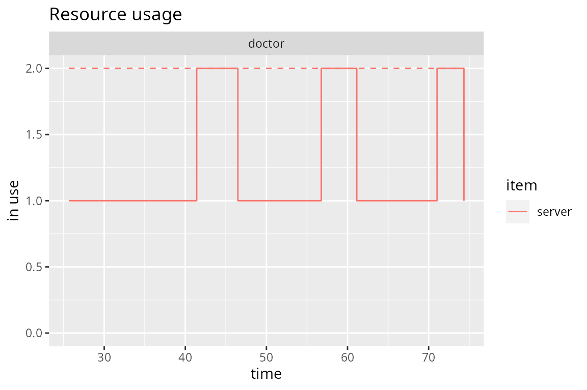

Plotting simmer statistics
Bart Smeets, Iñaki Ucar
2022-02-07
Source:vignettes/plot.simmer.Rmd
plot.simmer.RmdSimulation example
This is the basic example from Introduction to simmer. Please, refer to that vignette for further detail.
library(simmer)
library(parallel)
patient <- trajectory("patients' path") %>%
## add an intake activity
seize("nurse", 1) %>%
timeout(function() rnorm(1, 15)) %>%
release("nurse", 1) %>%
## add a consultation activity
seize("doctor", 1) %>%
timeout(function() rnorm(1, 20)) %>%
release("doctor", 1) %>%
## add a planning activity
seize("administration", 1) %>%
timeout(function() rnorm(1, 5)) %>%
release("administration", 1)
envs <- mclapply(1:100, function(i) {
simmer("SuperDuperSim") %>%
add_resource("nurse", 1) %>%
add_resource("doctor", 2) %>%
add_resource("administration", 1) %>%
add_generator("patient", patient, function() rnorm(1, 10, 2)) %>%
run(80) %>%
wrap()
})Basic visualisation tools
This package provides some basic visualisation tools to help you take a glance at your simulations quickly, but of course you probably may want to develop your own data analysis.
There are three types of plot implemented with different metrics available:
- Plot of resources. Two metrics available:
- the usage of a resource over the simulation time frame.
- the utilization of specified resources in the simulation.
- Plot of arrivals. Three metrics available:
- activity time.
- waiting time.
- flow time.
- Plot of attributes.
All these plots and metrics are accessible through the S3 methods for the plot generic provided by this package (see ?plot.mon for more details), which uses the ggplot2 package as backend.
For instance, after you’ve left it simmering for a bit (pun intended), we can have a look at the overall resource utilization. The top and bottom of the error bars show respectively the 25th and 75th percentile of the utilization across all the replications. The top of the bar shows the median utilization.
library(simmer.plot)
resources <- get_mon_resources(envs)
plot(resources, metric = "utilization")
It is also possible to have a look at resources’ activity during the simulation.

In the above graph, the individual lines are all separate replications. The smoothing performed is a cumulative average. Let’s take a look now at the instantaneous behaviour for a specific replication and resource. In the example below, the 6th replication is shown.
plot(get_mon_resources(envs[[6]]), metric = "usage", "doctor", items = "server", steps = TRUE)
Next we can have a look at the evolution of the arrivals’ flow time during the simulation. In the plot below, each individual line represents a replication. A smooth line is drawn over them. All arrivals that didn’t finish their entire trajectory are excluded from the plot.
arrivals <- get_mon_arrivals(envs)
plot(arrivals, metric = "flow_time")
Similarly one can have a look at the evolution of the activity times with metric = "activity_time" and waiting times with metric = "waiting_time".